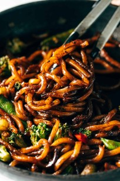

Udon

Ingredients You’ll Need For This Recipe
This Black Pepper Stir Fried Udon is the perfect SOS dinner!
- udon noodles
- a bag of stir fry vegetables
- dark soy sauce
- oyster sauce
- rice vinegar
- garlic
Now let’s get cooking!
How To Make It
- Sauce:Shake up all the sauce ingredients in a jar.
- Noodles:Heat a nonstick skillet over medium high heat
- Veggies:Add the veggies and pour a little more sauce over everything
- Finish:Remove from heat and stir in some freshly grated garlic and A TON of freshly ground black pepper.